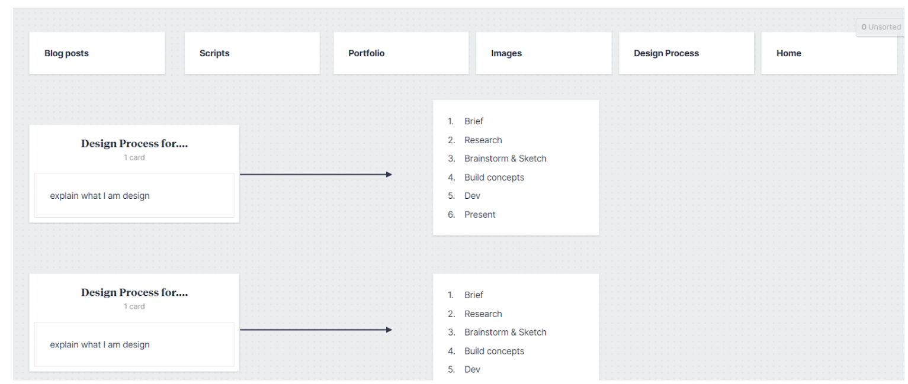

Initial Wireframes
These wireframes are rough sketches meant to explore layout and basic content placement. I wasn’t thinking about colours or fonts yet—this was just about figuring out how to guide the user’s journey across the site. Looking back, some layouts didn’t work at all, but that was part of the process. They gave me a starting point to critique and improve.
Homepage

Blog

Design

Portfolio

Scripts

Annotated Wireframes
These wireframes are more refined and include detailed annotations for layout logic and interface elements. By this point, I had started to figure out which areas needed stronger structure and which parts could breathe a little more. Annotations helped me think more intentionally about each section—why it’s there, what it should do, and how it connects with the rest of the site.
Homepage

Blog

Design
Portfolio

Scripts

New Wireframe sketches homepage and portfolio layout (animation, design, writing, essay)

After implementing my first design, I wasn’t happy with how the homepage looked. Everything felt very out of place and disconnected. The layout seemed random rather than intentional, and the visual hierarchy wasn’t clear. So I decided to redesign the homepage wireframe to better reflect a structured user flow. I wanted visitors to immediately understand where they were and what to do next—without guessing or scrolling aimlessly.

Additionally, I’m thinking of changing my design and portfolio pages so they feel more unified. Right now, they look like two completely different websites, and that’s not what I want. The whole point is to show that everything is part of the same identity—same thinking, same tone, same user experience. I’m working on new wireframes that bring everything into better alignment and make the transitions between pages feel seamless and intentional.